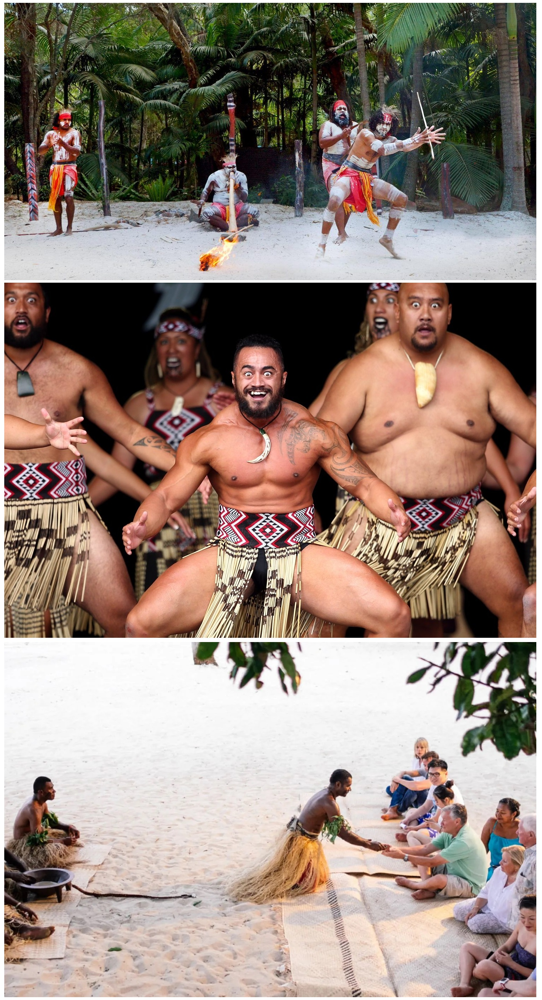
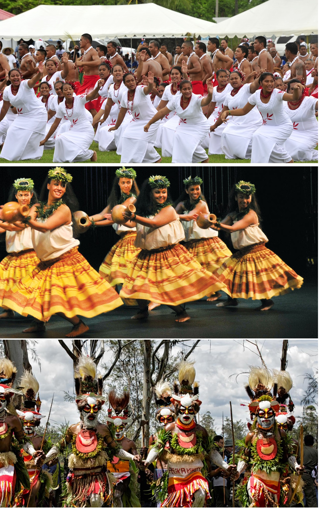
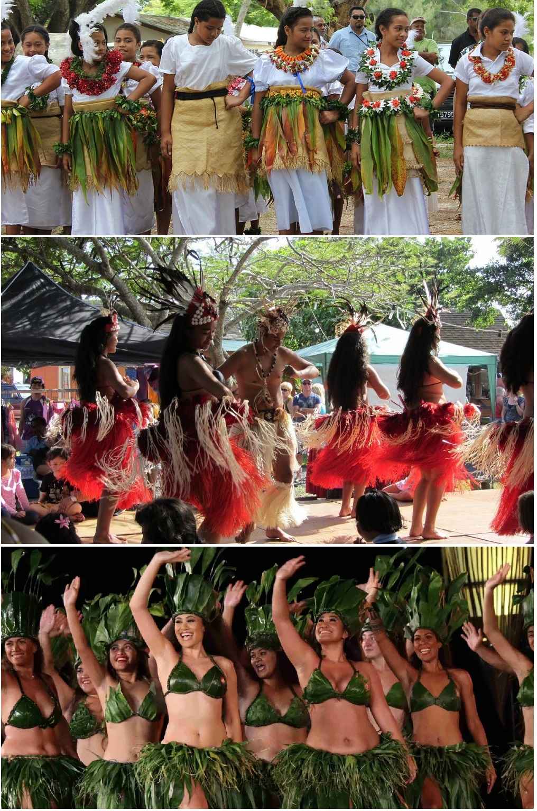

Oceania, un vast teritoriu care cuprinde Australasia, Melanezia, Micronezia și Polinezia, este renumită pentru diversitatea sa culturală și pentru tradițiile și obiceiurile unice ale popoarelor indigene. Aceste practici culturale sunt adânc înrădăcinate în istoria și spiritualitatea comunităților locale și sunt celebrate cu mare respect și devoțiune.

În Australia, cultura aborigenă este una dintre cele mai vechi din lume, iar una dintre tradițiile sale esențiale este
ceremonia „Dreamtime” (Timpul Visului). Aceasta se referă la miturile și legendele sacre care explică originea lumii și a
oamenilor. Poveștile din Dreamtime sunt transmise prin cântece, dansuri, picturi pe corp și pe stânci, fiind o modalitate de
a conecta generațiile și de a menține vie moștenirea culturală.
În Noua Zeelandă, tradițiile maori sunt foarte respectate și integrate în viața de zi cu zi. Una dintre cele mai cunoscute tradiții
este „haka”, un dans ritualic care combină strigăte, gesturi și bătăi ritmice. Haka este folosit atât în ceremonii, cât și pentru a
intimida adversarii înainte de competițiile sportive, fiind un simbol al mândriei și identității maori.
Insulele Fiji sunt cunoscute pentru ceremoniile „kava”, care implică prepararea și consumul unei băuturi tradiționale realizate din
rădăcina plantei kava. Kava este consumată în cadrul unor ritualuri sociale și religioase, având efecte calmante și simbolizând pacea
și unitatea. Ceremonia kava este un moment de reflecție și comuniune pentru comunitate.


În Samoa, tradiția „fa’a Samoa” (Modul Samoan) reprezintă un set de valori și practici care guvernează viața socială
și familială. Aceasta include respectul pentru autoritate, importanța familiei extinse și ospitalitatea față de oaspeți.
„Talofa” este o formă de salut care exprimă afecțiune și respect, reflectând valorile comunității samoane.
Insulele Hawaii, parte a Statelor Unite, au o cultură distinctă influențată de tradițiile polineziene. „Hula” este un dans
tradițional hawaiian care combină mișcările corpului cu cântece (mele) și bătăi de tobe (ipu). Hula este o formă de exprimare
artistică și spirituală, fiind folosită pentru a povesti istoria și legendele locale.
Popoarele din Papua Noua Guinee au o diversitate culturală remarcabilă, cu peste 800 de limbi și nenumărate tradiții. Un obicei
notabil este festivalul „Sing-Sing”, unde diferite triburi se adună pentru a-și prezenta dansurile, muzica și costumele tradiționale.
Sing-Sing promovează pacea și înțelegerea între triburi și oferă o oportunitate de a celebra identitatea culturală.
În Tonga, „Lakalaka” este o formă de artă performativă care combină dansul și poezia. Acesta este interpretat în ocazii speciale,
cum ar fi aniversările regale și sărbătorile naționale. Lakalaka reflectă ierarhia socială și spirituală a societății tongane, având
rolul de a consolida coeziunea comunității.
Insulele Cook au o tradiție fascinantă numită „Ura”, un dans energic și expresiv interpretat de femei, care combină mișcările fluide
ale mâinilor cu ritmurile tobelor. Ura este o formă de artă care celebrează frumusețea naturii și legăturile spirituale ale locuitorilor
insulelor Cook cu mediul înconjurător.
În Tahiti, dansul „Ori Tahiti” este esențial pentru cultura locală. Acest dans vibrant și dinamic este executat în costume tradiționale
și este însoțit de tobe și instrumente de percuție. Ori Tahiti este o formă de exprimare artistică care spune povești despre istoria și
mitologia tahitiană, fiind o parte integrantă a festivităților locale.

Aceste tradiții și obiceiuri din Oceania sunt o reflectare a bogăției culturale și spirituale a regiunii. Ele oferă o perspectivă profundă asupra modului în care comunitățile locale își păstrează identitatea și valorile, în ciuda influențelor moderne și a schimbărilor globale. Prin aceste practici, locuitorii Oceaniei își celebrează trecutul și își exprimă continuitatea culturală.